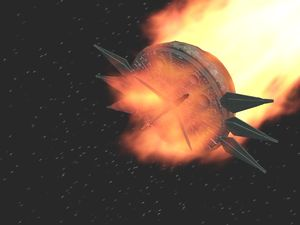

Death Egg
 De: La Frikipedia, la enciclopedia extremadamente seria.
De: La Frikipedia, la enciclopedia extremadamente seria.
| De la serie armas de ayer y hoy:
|
| Death Egg
|
|
|
| Fecha de invención
|
1992
|
| Letalidad
|
Es tan letal que se destruyó a sí mismo en mas de tres ocasiones.
|
| Peligrosidad (para uno mismo)
|
Es muy peligroso, sobre todo si estás dentro de él cuando explota.
|
| Es efectivo contra
|
Erizos, Equidnas, Zorros de dos colas, y cualquier animalejo pulgoso que quieras exterminar.
|
| Personas que mata por minuto
|
Casi siempre el único que termina muriéndose es Eggman.
|
| Alcance (Si lo tiene)
|
Puede destruír un planeta entero con solo un disparo (aunque nunca lo ha hecho ¬¬)
|
| ¿Sirve en la actualidad?
|
No, ya lo desmantelaron mas de tres veces, pero no sería raro que lo vuelvan a construir otra vez...
|
| Nivel de Frikismo
|
Ya es bastante friki que sea una Death Star con cara de Dr. Eggman...
|
| Dificultad de uso
|
Es tan difícil pilotearlo... ¡que ni siquiera el propio Eggman puede hacerlo bien!
|
| Precio
|
Invaluable (solo se vende en deshuesaderos y chatarrerías)
|
| ¿Es recomendable?
|
No es recomendable que estés en su interior cuando explote...
|
El Huevo de la Muerte es una cutre parodia de la Estrella de la Muerte de Star Wars, que fue construída por el Dr. Ivo "Eggman" Robotnik a su imagen y semejanza, y por eso en vez de llamarla "Death Star" decidió llamarlo Death Egg. Se trata de una enorme y descomunal cagada Estación Espacial idéntica a la de Darth Vader, pero con dos cañones láser en vez de solo uno, y un tren de aterrizaje que mas bien serían dos soportes o patas de apoyo, y por esas casualidades de la vida los dos cañones gigantes parecen ojos y las patas esas están ubicadas bajo los cañones y parecen bigotes, y por eso todo junto pareciera ser los ojos y los grandes mostachones del Dr. Eggman, porque el hijo de puta es tan megalómano que hasta quiso que su enorme nave espacial cargada de armas de destrucción masiva se parezca a su fea cara de huevo.
Historia
Corría el año 1992 en el planeta Tierra (no sabemos que año sería en el Planeta Möbius, y por eso usamos la cronología de la Tierra) cuando el Dr. Eggman había fracasado en su primer intento de dominar el susodicho planeta para oprimir al proletariado, porque un erizo enano y anarquista llamado Sonic había frustrado sus planes, así que al Dr. Robotnik se le ocurrió inventar una nueva super Arma de destrucción masiva que al mismo tiempo le sirviera de fortaleza y cuartel general de base de operaciones, y al mismo tiempo le sirviera de nave espacial para viajar por el cosmos y dominar todos los planetas del universo, y al mismo tiempo le sirviera de satélite artificial para eclipsar el Sol y hacer que reine la oscuridad permanente en el mundo, obligando así a que todos mantengan la luz encendida todo el día, y con eso los haría aumentar el consumo de electricidad para generar mas ganancias a la empresa de energía eléctrica de la que él era dueño (¿o que creías que eran todas esas chimeneas humeantes en Scrap Brain Zone?).
Para este fin encontró la solución indicada, que era robarle a los Sith los planos de la estación espacial que habían construído para el Imperio, y con dichos planos el Dr. Eggman hizo algunas modificaciones para tunnear la Estrella de la Muerte y obtener como resultado al Huevo de la Muerte, su tan preciada estación espacial internazional de uso exclusivo para el Imperio Huevo, el nuevo reino fascista dictatorial que el Dr. Huevón iba a erigir cuando concretara sus planes para dominar el mundo.
Diseño

Vistas lateral y frontal del Death Egg, como si estuvieran por meterlo preso, aunque es tan grande que no cabe ni en el
Area 51.
El diseño del satélte artificial fue sencillo: el Dr. Eggman simplemente respetó el diseño original de la Death Star de Lord Sidious, pero a su versión la hizo mas poderosa agregándole un segundo cañón laser que dispara torpedos de fotones y el rayo de la muerte de Nikola Tesla, y los dos cañones junto al tren de aterrizaje fueron hechos a propósito para que parezca la cara de Eggman, como pa' que no digan que nomás era solo un obvio plagio de la Estrella de la Muerte y ya, cuando eso es precisamente lo que es.
Para alimentar semejante bestia de nave espacial, Robotnik, Eggman, o como mierda se llame, tuvo que encontrar una fuente de alimentación lo suficientemente cuantiosa como para generar 15.000 Giga Joules de energía por minuto. Finalmente encontró un lombriz como para generar 15.000 Giga Calorías por segundo, que esa no era la idea pero al menos con eso vemos por qué el Dr. Eggman aumentó de peso y está tan gordo.
Como ya no podía ni caminar porque de tanta grasa que ingirió la panza no le dejaba ver ni su neptunio, y plutonio como para hacer suficientes Khaddafi mas bien no tienen ni para comprar jamón endiablado. Como sea, Eggman le robó el Flux Capacitor al Doc. Brown y el plutonio a los libios, y así logró obtener su fuente de alimentación de energía nuclear para abastecer y hacer funcionar su Estación Espacial de Combate Death Egg.
Versiones del Death Egg

Así era el primer Death Egg por dentro, y Sonic se pasaba varias vidas (y Continues...) pensando en como carajo pegarle 12 veces al robot sin morir en el intento... ¡¡¡que joder que ni siquiera había una puta Ring!!!
- Death Egg: Obviamente la primer versión de esta nave con forma de huevo tenía por nombre solo Death Egg así a secas, y hasta entonces nadie se imaginaba que posteriormente iban a sacar mas versiones, pero luego de que ésas salieron podríamos decir entonces que ésta sería la versión 1.0, porque es la primera. Se trata del hijo de puta luego te disparaba unos laser que te cagas, pero tras destrozarlo ya podías ir al acto 2 donde Eggman te esperaba para joderte con un mini-Death Egg a control remoto, y luego que lo derrotaras tenías que enfrentarte a una versión remasterizada del Metal Eggman, conocida como Metal Eggrobo, y ahora debías vencerlo no una sino DOS VECES, pero ya que lo vencías el Death Egg ahora si se destrozaba en mil pedazos de una buena vez por todas (pero si Sonic tenía las 7 Chaos Emeralds tenías que transformarte en Super Sonic y pasarte Doomsday Zone, porque en estos juegos siempre te joden con alguna trampa que ni te imaginabas...)
bolas anexadas a su fuselaje. Si ignoramos los polígonos del obsoleto Arcade Model 2B aún podremos apreciar la escencia del Death Egg original en su diseño.
Sonic VS Metal Sonic en otro repetitivo combate final que seguramente ya hemos presenciado mil veces en todos estos juegos.
- Death Egg II: También llamado Death Egg 2 (por los números romanos) es obviamente la segunda versión del Death Egg. En realidad oficialmente el Death Egg propiamente dicho era aquél que ya dijimos que se estrelló contra Angel Island ciento ochentamil veces durante la llamada "Saga del Death Egg" y que por lo tanto luego de haber sido destruído al fin en "Sonic & Knuckles" nunca mas volvió a aparecer oficialmente en ninguna de las posteriores secuelas de continuidad de la franquicia principal de Sonic, pero como los de spin-offs de la franquicia de Sonic, porque total como sabemos estos refritos siempre son un fracaso así que total si el Death Egg fracasa en una de estas sub-sagas total no importa porque
nadie lo va a notar no cuentan como línea de continuidad en el hilo oficial del argumento de la saga de Sonic. Así fue que para el excéntrico Sonic The Fighters, introdujeron lo que resultó ser el segundo Death Egg construído por Robotnik, en reemplazo del Death Egg original que ya fue hecho añicos por Sonoro & Nudillos. Pos entonces Eggman creó el Death Egg 2, que a diferencia del Death Egg 1 ahora esta segunda versión era mas estrafalaria y no era solo un único Huevo, sino que la nave principal seguía siendo obviamente esférica como la Death Star, pero ahora tenía varios otros huevecillos mas pequeños y de colores conectados alrrededor suyo, como pa' que no digan que los muchachos del Sonic Team andaban escasos de ideas y nomás repitieron el viejo truco del Sonic Championship era obviamente la fase final del juego, cuyo argumento obviamente giraba en torno a ir a destruir el Death Egg 2.0 para que Eggman no pueda dominar el mundo, y que obviamente para llegar hasta el final había que recoger 8 Chaos Emeralds (agregaron una porque es un juego de lucha con 8 personajes seleccionables y debía ser una esmeralda para cada uno... ¡que chafa!). Al darle ostias a todos los oponentes del torneo de Artes Marciales conseguías todas las Esmeraldas Caos y podías abordar el transbordador espacial de Colas para acoplarte al Death Egg 2. El susodicho Death Note Egg 2 tenía dos "actos" (sí es que a esas fases se las pueden llamar "actos" ¬¬), el "Ojo del Death Egg" y el "Hangar del Death Egg". En Death Egg's Eye ibas tras vencer a todos los otros personajes del juego, donde tu último reto ahora parecía ser vencer a Metal Sonic (parece que a éste otro pinche pendejo también lo reconstruyen por mas que lo mates mil veces) pero en Death Egg's Hangar es la batalla final definitiva donde debes vencer al Dr. Eggman, que ahora está montado en tu madre el Egg Figther (nomás es el clásico Eggmobile pero con brazos y patas para pelear estilo Street Fighter) y si no le ganas en 15 segundos no podrás ver el cutre ending del juego donde tu personaje escapa de la explosión del Death Egg II piloteando a bordo del Lunar Fox (el puto cohete espacial de Tails). En resumen, el Death Egg 2 solo es un Death Egg cutre con mas bolas de colores para que parezca mas cursi, pero no tiene ni por asomo el encanto del tan afeminado afamado Death Egg clásico de los juegos de antaño.
Esa pequeña mancha en el paisaje es el Death Egg. Al principio la
foto de aficionado presentaba sus dudas, pero gracias a
Joseph Allen Hynek sabemos que la fotografía es genuina. Sin duda éste fue un descubrimiento importantísimo para el campo de la
Ufología.
Eggman en la cabina de control del Death Egg III, a punto de
ser molido a palos por Emerl detonar su "Final Egg Blaster".
- Death Egg III: El Huevo de la Muerte volvió de la muerte (valga la redundancia) para hacer su tercera resurrección en el segundo juego de lucha del erizo, Sonic Battle. En este spin-off de Streets Of Rage, Shadow Dancer, y esos viejos juegos clásicos de Emerl The Gizoid, un robot de mierda que le hace plagio a Rockman y obtiene los poderes de todos los personajes con los que lucha, y por eso se hace mas poderoso que la mierda. Al final Emerl debe enfrentarse en la batalla final contra Eggman a bordo del nuevamente reconstruído Death Egg, que oficialmente no le pusieron de nombre Death Egg 3 pero obviamente siendo la tercera versión del Huevo de la Muerte que fabricaron después de la caída del
Halcón Negro Death Egg II de Sonic The Fighters, entonces obviamente esta nueva versión 3.0 es el Death Egg III. Como este nuevo juego Sonic Battle es muy cutre, obviamente el Death Egg III también era así de chafa y de hecho la primera vez que lo ves ni se nota lo que era porque nomás parece una de esas difusas fotos de OVNIs que toman los frikis donde una mierda de mancha en el fondo del paisaje te dicen que es una nave extraterrestre, y de lejos así se veía este Death Egg 3 como un simple OVNI de dudosa verificabilidad, pero gracias a las investigaciones del Doctor en Ufología Joseph Alien Hynek se comprobó que efectivamente el OVNI de la fotografía era el mismísimo Death Egg ahora relanzado en su tercera versión. El nuevo Death Egg no repite el error del Death Egg II de tener varias bolas de colores anexadas ya que los programadores de SEGA vieron que eso era de lo mas cursi y les quedaba como el culo, además de que obviamente se cagaba en el concepto original de que el Death Egg fuera una parodia de la Death Star, así que nuevamente hicieron que el Death Egg 3.0 fuera netamente una esfera ovoide con cara de culo Dr. Eggman, aunque aquí como dijimos la calidad de la imagen es tan mala y no tiene zoom y por eso ni se le ve la cara de Robotnik aunque se nota una leve protuberancia que muchos pensaron que era un tumor cancerígeno el Cañón Eclipse y por eso creyeron que el nuevo Death Egg era mas bien basado en la Colonia Espacial ARK aunque en realidad eso era solo la trompa del fuselaje que viene a ser la nariz de Eggman con las patas de apoyo similares a sus bigotes, al estilo del Death Egg clásico. Igual así este Death Egg III tiene un arma de destrucción masiva llamada Final Egg Blaster que obviamente es otro rayo láser que te cagas y por eso Sonic va al Huevo de la Muerte para destruírlo, pero como Emerl ya está grande y es mas poderoso entonces quiere ser él el nuevo protagonista de la saga y le da ostias a Sonic hasta dejarlo bien hecho mierda y así Emerl ocupa el papel de héroe y se enfrenta al Dr. Eggman en la batalla final donde Eggman lo caga a tiros con su Egg-O-Matic pero obviamente Emerl gana la batalla aunque el Final Egg Blaster está a punto de dispararse y matará a todo el mundo, y por eso Emerl en un increíble acto heroico de altruísmo nunca antes visto decide autodestruírse para hacer mierda al Death Egg III y así salva al mundo y le roba el protagonismo a Sonic, que se quedó con las ganas de transformarse en Super Sonic para quedarse con la victoria final como hacía en los anteriores juegos de la saga, y que ahora no pudo hacer porque el enano ése de Emerl le cagó el protagonismo.
Así se ve el Death Egg en
Sonic & Sega All Stars Racing. Cualquier semejanza con el nivel "Crazy Gadget" de
Sonic Adventure 2 es pura coincidencia.
- Death Egg 3D: Como indica el nombre, es el mismo Death Egg clásico de antaño, de ayer y hoy, de siempre y de todos los tiempos, pero ahora en su versión en Sonic & Sega All-Stars Racing, un juego de
mierda carreras para XBOX 360, Playstation 3, y otros menos afortunados donde los personajes de la saga de Sonic competían en un circuito tipo Need for Speed junto a otros personajes de otras franquicias de Sega... MOMENTO!:, ¿Sega tiene otras sagas además de la de Sonic?. En fin, al parecer el juego está hecho únicamente para promocionar a esos otros personajes de las sagas minoritarias de Sega que nunca llegaron a la fama y no los conoce ni su madre, y por eso hicieron este estúpido juego de carreras donde a la sombra del todopoderoso Sonic aparecen demás personajes de las otras franquicias, obviamente en escenarios y fases extraídos de los juegos de Sonic y de los otros pobres diablos anteriormente mencionados, y es por eso que no podía faltar la mega-colosal estación espacial del Death Egg. A éste Death Egg lo hicieron en 3D, porque obviamente todo el puto juego es en 3D, pero no te puedes dar el gusto de corretear por ahí y accionar artilugios estrafalarios como los que había en Sonic & Knuckles porque lo de la escenografía en este juego es meramente estético y le han quitado todo lo divertido que tenían aquellos clásicos juegos de plataformas, y por eso este juego termina haciéndose muy aburrido, lo cual es lógico, ya que al fin y al cabo es un juego de Sega carreras y no de acción/aventura como nos gusta a los Sonicmaníacos, pero para hacerte llorar por la nostalgia pusieron al Boss de Doomsday Zone revoloteando por ahí y también puedes jugar como Metal Sonic como personaje seleccionable aquí en este Death Egg Zone 3D, pero la única pista disponible en ésta área es la de Egg Hangar, que como vemos su nombre fue extraído de la fase homónima del Death Egg II de Sonic The Fighters, y como sabemos ese cachivache no tiene nada que ver con el Death Egg clásico del Mega Drive, y por eso en ésa la cagaron.
Death Eggs que no son el Death Egg
Como vemos el Death Egg se convirtió en un cliché y fue usado como estereotipo para las zonas finales de los juegos de Sonic, donde casi siempre transcurren en alguna base de operaciones ultra-tecnócrata del ultra-neonazi Dr. Eggman, y por eso aunque el Death Egg original solo apareció en la saga del Genesis y sus otras versiones solo salieron en spin-offs alejados de la serie original, igual así otras naves espaciales y satélites artificiales del Dr. Huevón siguieron siendo diseñadas en base a la estereotipada y trillada imagen y semejanza del Death Egg:
 Estuvo en órbita durante 50 años, pero bastó un solo día para que Sonic y sus amigotes la hicieran caer en picada (eso pasa por no tener licencia de conducir)
- Space Colony Ark: Es la mas conocida de las estereotipadas estaciones espaciales basadas en el Death Egg, ya que de hecho es la primera de estas naves espaciales hechas a imagen y semejanza del Death Egg, y también la mas parecida, y si el Death Egg es un plagio de la Death Star entonces la Colonia Espacial Ark es un plagio del Death Egg, por lo que en italiano diríamos que es un Plaggiarismo di Plaggiarismo. Esta cutre parodia del Death Egg aparece como eje
del mal de la historia de Sonic Adventure 2, donde dicen que hace 50 años atrás cuando todavía Eggman era un mocoso mantecoso y mofletudo lleno de acné, su abuelo el Profesor Gerald Robotnik era el científico loco mas grande de todos los tiempos y había construído una Estación Espacial Interracial donde hacían experimentos de hibridación genética con animales para desarrollar la cura contra el SIDA y cepas del virus H1N1. El resultado de las investigaciones fue Shadow The Hedgehog, también conocido como "la forma de vida definitiva" o "un plagio de Sonic con los colores del anarcosocialismo", y ya pasados los 50 años el Prof. Robotnik pasó a mejor vida y su lugar fue ocupado por nuestro archiconocido enemigo el Dr. Ivo Robotnik, quien reactivó la Colonia Espacial ARK para usar su Eclypse Cannon como arma de destrucción masiva teniendo ahora a Shadow como lacayo para hacerle frente a Sonic. Muy lindo el cuento, ahora; si observamos vemos que la Colonia Espacial ARK es sorprendentemente parecida al Death Egg, nomás que no es una esfera completa sino una media esfera en cuya cara plana vemos dos grandes ojos que ahora no son cañones laser como en el Death Egg, porque el Cañón Eclipse ése es la nariz de la nave, y los bigotes en realidad no son el tren de aterrizaje sino unos paneles solares que mas bien parecen alerones en los costados de la nave, pero igual tenemos que este otro satélite artificial vuelve a tener cara de Eggman a pesar de que supuestamente "fue construído 50 años antes por el Prof. Gerald Robotnik"... bla, bla bla, es obvio que como al juego lo hicieron mucho después que al Sonic & Knuckles, entonces es la Colonia Espacial ARK el plagio al Death Egg, aunque claro que siempre se puede decir que es un "tributo" al Death Egg y no un "plagio", como para no dejar en evidencia que los chicos del Sonic Team se han copiado a sí mismos.
- Egg Utopia: Es el nivel final de Sonic Advance 2 (o al menos eso es lo que pensabas...), que nuevamente se trata de un satélite artificial de forma esférica con cara de Dr. Eggman, pero con artilugios similares no solo de los Death Egg de Sonic 2 y Sonic & Knuckles, sino también con algunas porquerías parecidas a "Flyng Battery", otra de las tantas fases del clásico S&K que tantas veces mencionamos (y seguiremos haciendo). El nivel obviamente fue pensado para ser la zona final del juego, pero parece que les sobraba espacio libre en la memoria así que metieron dos niveles mas después de éste: XX, un satélite de morondanga donde Sonic se enfrenta a Eggman que lo ataca usando los viejos y nostálgicos aparatos reciclados de los juegos de Mega Drvie, y True Area 53, que suena a cutre parodia del Sonic Advance la final de Super Sonic era The Moon Zone, en Sonic Advance 2 Super Sonic iba a True Area 53, y en Sonic Advance 3 iba a Nonaggression; pero antes de lanzarse al vacío del espacio siempre pasaba por una base de Eggman; que en Sonic Advance era "X Zone", en Sonic Advance 2 era "XX Zone", y en Sonic Advance 3 era... "Chaos Angel" ¬¬ ... Ya vemos por qué en el último juego de ésta trilogía pusieron la final en Angel Island y no en una nueva base de Eggman!!!
Ésta es la E.G.G. Station Zone. Cualquier parecido con el Death Egg Zone de
Sonic 2 es pura coincidencia.
- E.G.G. Station Zone: Este es el colmo de los plagios, ya que la Zona de la Estación H.U.E.V.O. no es mas que una obvia remake del Death Egg del Sonic 2. Esta E.G.G. Station Zone es la fase final del juego HD de sus viejos clásicos, y el Death Egg obviamente no podía faltar en esta nueva moda Retro y por eso en Sonic 4 la zona final tenía que ser el clásico Death Egg de Sonic 2, pero obviamente remasterizado y relanzado con nuevo nombre para hacer creer que se trata de otra estación espacial diferente, cuando en realidad es mas que obvio que siempre recurren al cliché del viejo truco de reparar el Death Egg y hacerlo reflotar para relanzarlo y volver a ponerlo en órbita ciento ochenta mil veces.
NOTA: Es obvio que muchos otros niveles de la saga de Sonic se basan en el Death Egg, tales como Astral Babylon, Cosmic Angel Zone, Dead Line Zone, Last Utopia Zone, Meteor Base Zone, Silver Castle Zone, y prácticamente casi todas las bases de operaciones de Eggman, que como sabemos originalmente estarían todas basadas en Scrap Brain Zone así como Green Hill Zone sirvió de prototipo para cada primera fase de los juegos de Sonic, y de la misma forma Scrap Brain era inicialmente el prototipo para cada fase final de estos juegos pero tras la aparición del Death Egg es notorio que cada estación espacial y/o nave interplanetaria de Eggman están basadas en el susodicho Huevo de la Muerte, porque los chicos de Sega son Super-Hyper-Mega-originales ¬¬
galEGGría
Así era el prototipo del primer Death egg que Eggman ideó antes de construír su versión definitiva.
Super Sonic esperando a que Eggman salga de la letrina, porque ahora le toca entrar a él (y ése es el único baño que hay en toda la estación espacial).
Super Knuckles a punto de darle ostias a la Computadora de la Nave Espacial Death Egg (algo que tú nunca pudiste hacer en tu Sega Genesis) ;)
El Huevo de la Muerte y la Estrella de la Muerte batiéndose a duelo a ver cual de las dos es la Estación Espacial mas mortífera de la Galaxia.
El Death Egg es de forma y tamaño similar a la Moonwalker según Sonic, Eggman, y misceláneos.
En Sonic Drift 2 también aparece el Death Egg, como para seguir demostrando que es el arma de destrucción masiva mas poderosa de toda la Vía Láctea (aunque con 8 BITs no se ve tan poderosa que digamos...)
Sonic y Tails viendo como el Death Egg ha provocado el agujero en la Capa de Ozono.
Super Sonic se enfrentó al Egg Figther de Eggman en lo que sería una suerte de UFC donde como sabemos, los luchadores de MMA parecen gran cosa pero en realidad no le llegan ni a los talones al Todopoderoso Bruce Lee.
Enlaces Huevones

Fotografía verídica del
Death Egg tomada por un satélite de la
NASA, lo que confirma que la agencia espacial de los
gringos también anda orbitando la Tierra con sus Armas de Destrucción Masiva en busca de "eliminar a la competencia", pero siempre tendremos a
Joseph Allen Hynek para que desclasifique los archivos "Top Secret" y saque a la luz todos los secretos de la
Ufología que los
yankis no quieren que se sepan.

|
|
|
|
|
 Shooter Shooter
 Terror Terror
 Velocidad Velocidad
 Rol Rol
 Estrategia Estrategia
 Aventuras Aventuras
 Fight! Fight!
 Clásicos Clásicos
 Deportivos Deportivos
 Aventura gráfica Aventura gráfica
 Novela visual Novela visual
 Personajes de videojuegos Personajes de videojuegos
|
Autor(es):
- Mad Max
- Lljosemll
- Shadowmura
- Sockerman
Frikipedia 2005-2016, Licencia
GFDL 1.2 - Extraído por FrikiLeaks


{kind=link}
{kind=link}
{kind=link}
{kind=link}
{kind=link}